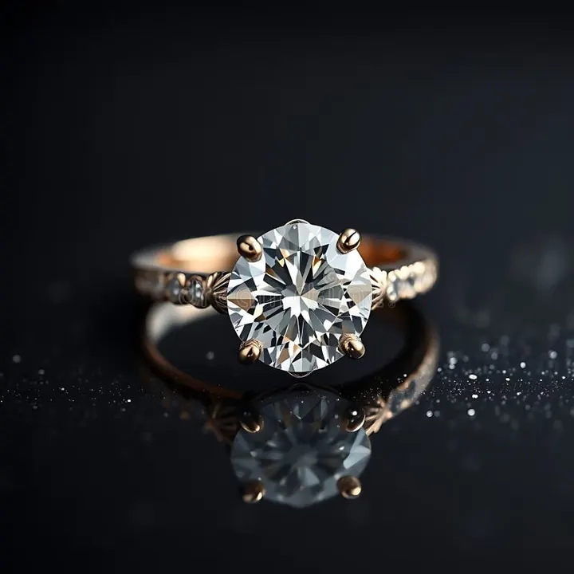

淨度分級與內含物：羽裂、針點與晶體的世界
鑽石內含物不是「髒點」，而是它在高壓地幔裡結晶時寫下的身世自傳——每一顆都獨一無二。

核心定義
淨度（clarity）衡量的是鑽石「乾淨的程度」——但這裡的乾淨不是指髒污，而是指鑽石內部的內含物（inclusion）與表面的瑕疵（blemish）多寡。GIA 的淨度等級從最高 FL（Flawless，無瑕）開始，往下依序是 IF（內部無瑕）、VVS1/VVS2、VS1/VS2、SI1/SI2、I1/I2/I3（內含物肉眼可見）。
判斷淨度的基準是「十倍放大鏡」：在十倍放大的條件下，從檯面與亭部觀察，內含物越少、越小、位置越不影響光線，等級就越高。超過十倍才能看到的東西，對日常佩戴其實沒有意義——這正是淨度分級最容易被消費者誤解的地方。
特徵與分類
| 等級 | 肉眼表現 | 十倍放大鏡表現 |
|---|---|---|
| FL / IF | 無瑕 | FL 內外皆無；IF 內部無瑕 |
| VVS1 / VVS2 | 無瑕 | 極難看到極微小內含物 |
| VS1 / VS2 | 無瑕 | 難看到小型內含物 |
| SI1 / SI2 | 多數無瑕 | 容易看到內含物（SI1 多仍不可見） |
| I1–I3 | 可見內含物 | 肉眼即可見明顯內含物 |
常見的內含物類型五花八門：羽裂（feather）是像裂紋一樣的裂隙；針點（pinpoint）是極小的白點；晶體（crystal）是包在鑽石裡的其他礦物小晶體；雲狀（cloud）是許多針點聚成一片霧；針狀（needle）是細長針形；還有雙晶紋（twinning wisp）這類與生長相關的痕跡。鑑定師會在證書的 diamond plot（淨度圖）上把它們一一標出來，就像畫一張礦床地圖。
科學原理
內含物為什麼存在？因為鑽石是在地球深部約 150～200 公里的地幔、攝氏一千度以上的高溫高壓下結晶的。結晶過程中，周圍的礦物碎片、氣體、流體都可能被「包」進鑽石裡，成為化石般的時間膠囊。科學家甚至能從內含物的成分反推鑽石形成的深度與年代——有些內含物本身就是地幔樣本。
常見的內含物礦物包括橄欖石、石榴石、輝石等，這些都是上地幔的典型礦物。所以內含物不是「瑕疵」，而是天然鑽石的出生證明——人造鑽石與仿鑽往往太乾淨或內含物形態完全不同，鑑定師一眼就能分辨。
鑑定與鑑別方法
- 用十倍放大鏡（loupe）從檯面開始，逐面掃描
- 記錄內含物的種類、大小、位置與顏色
- 套用五因素：大小、數量、位置、顏色對比、內含物種類
- 參考證書 diamond plot 對照實際位置
- 確認內含物是否為「表面達內含物」——這種會影響耐久度，要小心
市場行情與保養建議
實用建議：日常佩戴選 VS1～VS2 甚至 SI1 就非常足夠——這些等級的內含物用肉眼在正常距離幾乎不可見，價格卻比 VVS/IF 友善許多。SI2 以下就要小心：內含物可能肉眼可見，甚至影響結構強度（例如明顯的羽裂）。
對收藏與投資而言，IF/FL 有保值敘事，但流動性與變現時買家的接受度更重要；多數行家會選擇「乾淨度在肉眼無瑕以上、價格不過度追高」的區間。
常見誤區
無瑕（FL/IF）的價格可能是 VS 的兩三倍，但兩者在肉眼下看起來完全一樣。除非內含物大到肉眼可見或影響結構，否則 VS 等級就是性價比甜蜜點。
內含物是天然鑽石的身分證——可作為產地證據、真偽線索，甚至成為獨一無二的「指紋」。同一等級內，位置與顏色比數量更重要：一個藏在腰圍邊緣的小白點，遠比檯面中央的黑點討喜。
冷知識
培育鑽石與部分仿鑽往往太乾淨、太完美，反而成為破綻；天然鑽石的內含物形態（如天然解理、雙晶紋）是機器難以仿造的天然簽名。GIA 等機構就是靠這些細節判斷來源。
GIA 報告會用紅、綠、黑等顏色把內含物標在淨度圖上：紅色多為內含物，綠色為表面瑕疵。行家能從這張圖「讀」出這顆鑽石的身世。
反直覺觀點
聽起來矛盾，但位置決定一切：一顆 SI1 的內含物若全藏在腰圍、爪子或顏色極淡，肉眼表現可能勝過一顆檯面中央有明顯黑點的 VVS2。看淨度別只盯字母，要看內含物「長在哪」。
極少數含特殊內含物的鑽石（如內含另一顆小鑽石的「寶石中的寶石」、或含地幔礦物證據的稀有標本）會因科學價值被博物館或藏家高價收藏——瑕疵變賣點，只在懂的人眼裡成立。